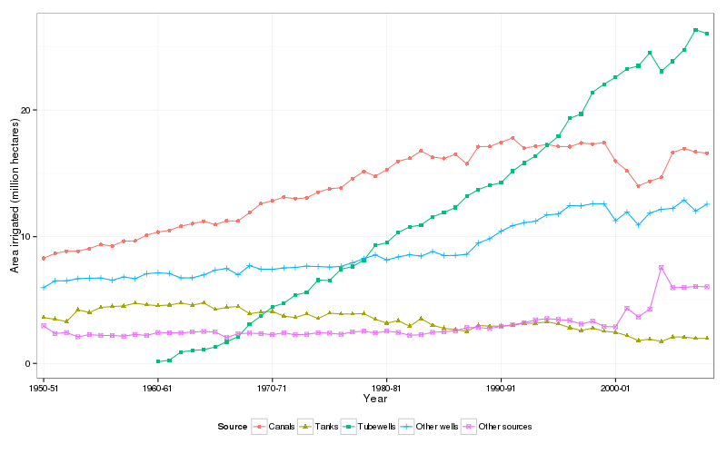

Statistics on irrigation and irrigated agriculture in India “measure the area irrigated by source (or sources) of irrigation. Such statistics contain no information on the quality of irrigation, on its intensity or regularity. Thus, irrigation statistics bring together, under the single head ‘irrigated’, a field that receives a single watering in a single season of the crop-year and a field that receives water in plenty all year round.” vikasirrigation1
“Statistics on irrigation provide data on net and gross irrigated area from different sources and on number of irrigation structures. In practice, some fields receive irrigation from more than one source, in different seasons and in a single season. Official sources of statistics on irrigation in India do not provide separate data on the areas irrigated from more than one source of water. In official records, the sum of the areas irrigated (net and gross) by different individual sources is always equal to the total area irrigated (net and gross), implying that no fields are classified as being irrigated from multiple sources of irrigation.” vikasirrigation1
Data on gross irrigated areas are incomplete and not available every year. Many States do not report these data at all.
Area irrigated by canals is likely to be over-reported as land in the command area is often considered as irrigated by canals even if it is not so. Data presented here show that area irrigated by canals has been stagnant since early 1980s. In reality, there has been a considerable decline in the extent of direct irrigation from canals in many canal irrigation projects on account of deterioration of infrastructure, accumulation of silt in reservoirs and poor irrigation management practices. Actual rates of growth of area under canal irrigation may have been even lower than what is reflected in these data. At the same time, seepage from canals contributes to groundwater recharge and augments groundwater irrigation potential.gadgil1948,dhawan1988
Expansion of irrigation since the 1980s has primarily taken place through increased use of tubewells. Number of tubewells (particularly, diesel pumpset driven tubewells) is likely to be an under-count and, consequently, area irrigated by tubewells is likely to be underestimated. Actual growth of area irrigated by tubewells may be higher than what is reflected in these data. vikasirrigation1

| Year | Government canals | Private canals | Canals (total) | Tanks | Tubewells | Other wells | Other sources | Net irrigated area |
|---|---|---|---|---|---|---|---|---|
| 1950-51 | 7.158 | 1.137 | 8.295 | 3.613 | --- | 5.978 | 2.967 | 20.85 |
| 1951-52 | 7.49 | 1.193 | 8.683 | 3.489 | --- | 6.517 | 2.36 | 21.05 |
| 1952-53 | 7.511 | 1.35 | 8.861 | 3.303 | --- | 6.521 | 2.437 | 21.12 |
| 1953-54 | 7.545 | 1.314 | 8.859 | 4.228 | --- | 6.685 | 2.097 | 21.87 |
| 1954-55 | 7.832 | 1.235 | 9.067 | 4.025 | --- | 6.726 | 2.27 | 22.09 |
| 1955-56 | 8.025 | 1.36 | 9.385 | 4.423 | --- | 6.739 | 2.211 | 22.76 |
| 1956-57 | 7.916 | 1.357 | 9.273 | 4.492 | --- | 6.566 | 2.202 | 22.53 |
| 1957-58 | 8.303 | 1.349 | 9.652 | 4.536 | --- | 6.818 | 2.15 | 23.16 |
| 1958-59 | 8.391 | 1.279 | 9.67 | 4.759 | --- | 6.686 | 2.286 | 23.4 |
| 1959-60 | 8.809 | 1.305 | 10.114 | 4.631 | --- | 7.083 | 2.209 | 24.04 |
| 1960-61 | 9.17 | 1.2 | 10.37 | 4.561 | 0.135 | 7.155 | 2.44 | 24.66 |
| 1961-62 | 9.339 | 1.163 | 10.502 | 4.612 | 0.258 | 7.094 | 2.418 | 24.88 |
| 1962-63 | 9.686 | 1.1463 | 10.832 | 4.7805 | 0.901 | 6.748 | 2.403 | 25.66 |
| 1963-64 | 9.862 | 1.1601 | 11.022 | 4.5992 | 1.028 | 6.756 | 2.483 | 25.89 |
| 1964-65 | 10.08 | 1.1431 | 11.223 | 4.78 | 1.087 | 6.9881 | 2.522 | 26.6 |
| 1965-66 | 9.859 | 1.099 | 10.958 | 4.258 | 1.293 | 7.3601 | 2.475 | 26.34 |
| 1966-67 | 10.221 | 1.026 | 11.247 | 4.424 | 1.706 | 7.4893 | 2.041 | 26.91 |
| 1967-68 | 10.295 | 0.948 | 11.243 | 4.493 | 2.112 | 6.9992 | 2.346 | 27.19 |
| 1968-69 | 10.985 | 0.907 | 11.892 | 3.926 | 3.087 | 7.714 | 2.39 | 29.01 |
| 1969-70 | 11.724 | 0.8806 | 12.605 | 4.059 | 3.739 | 7.4384 | 2.3564 | 30.2 |
| 1970-71 | 11.972 | 0.866 | 12.838 | 4.112 | 4.461 | 7.426 | 2.2661 | 31.1 |
| 1971-72 | 12.2461 | 0.8693 | 13.115 | 3.7341 | 4.745 | 7.5353 | 2.417 | 31.55 |
| 1972-73 | 12.134 | 0.8624 | 12.996 | 3.619 | 5.393 | 7.571 | 2.255 | 31.83 |
| 1973-74 | 12.196 | 0.8691 | 13.065 | 3.9 | 5.604 | 7.679 | 2.298 | 32.55 |
| 1974-75 | 12.657 | 0.857 | 13.5137 | 3.5443 | 6.583 | 7.6462 | 2.422 | 33.71 |
| 1975-76 | 12.933 | 0.858 | 13.7912 | 3.9722 | 6.543 | 7.601 | 2.386 | 34.59 |
| 1976-77 | 13.016 | 0.8454 | 13.8608 | 3.9013 | 7.4323 | 7.6552 | 2.3 | 35.15 |
| 1977-78 | 13.734 | 0.842 | 14.576 | 3.904 | 7.641 | 7.943 | 2.482 | 36.55 |
| 1978-79 | 14.304 | 0.8447 | 15.149 | 3.937 | 8.159 | 8.27 | 2.544 | 38.06 |
| 1979-80 | 13.931 | 0.8426 | 14.774 | 3.481 | 9.307 | 8.5571 | 2.405 | 38.52 |
| 1980-81 | 14.45 | 0.842 | 15.292 | 3.182 | 9.531 | 8.164 | 2.551 | 38.72 |
| 1981-82 | 15.456 | 0.49 | 15.946 | 3.376 | 10.334 | 8.403 | 2.4441 | 40.5 |
| 1982-83 | 15.716 | 0.4692 | 16.185 | 2.9363 | 10.77 | 8.577 | 2.223 | 40.69 |
| 1983-84 | 16.294 | 0.47 | 16.764 | 3.533 | 10.922 | 8.47 | 2.26 | 41.95 |
| 1984-85 | 15.805 | 0.4704 | 16.275 | 3.021 | 11.566 | 8.828 | 2.455 | 42.15 |
| 1985-86 | 15.715 | 0.465 | 16.1796 | 2.765 | 11.903 | 8.5153 | 2.502 | 41.87 |
| 1986-87 | 16.039 | 0.4562 | 16.4948 | 2.677 | 12.298 | 8.5242 | 2.575 | 42.57 |
| 1987-88 | 15.286 | 0.4602 | 15.746 | 2.523 | 13.185 | 8.611 | 2.827 | 42.89 |
| 1988-89 | 16.64 | 0.462 | 17.102 | 2.996 | 13.716 | 9.498 | 2.8364 | 46.15 |
| 1989-90 | 16.646 | 0.4782 | 17.124 | 2.941 | 14.049 | 9.837 | 2.751 | 46.7 |
| 1990-91 | 16.9728 | 0.4804 | 17.4532 | 2.944 | 14.257 | 10.437 | 2.932 | 48.02 |
| 1991-92 | 17.327 | 0.4642 | 17.7912 | 2.991 | 15.168 | 10.869 | 3.048 | 49.87 |
| 1992-93 | 16.503 | 0.483 | 16.986 | 3.179 | 15.815 | 11.105 | 3.211 | 50.3 |
| 1993-94 | 16.653 | 0.485 | 17.138 | 3.17 | 16.376 | 11.22 | 3.435 | 51.34 |
| 1994-95 | 16.799 | 0.48 | 17.279 | 3.276 | 17.189 | 11.722 | 3.533 | 53 |
| 1995-96 | 16.561 | 0.559 | 17.12 | 3.118 | 17.91 | 11.787 | 3.467 | 53.4 |
| 1996-97 | 16.889 | 0.22 | 17.109 | 2.821 | 19.338 | 12.457 | 3.388 | 55.11 |
| 1997-98 | 17.186 | 0.211 | 17.397 | 2.597 | 19.68 | 12.431 | 3.106 | 55.21 |
| 1998-99 | 17.099 | 0.212 | 17.311 | 2.795 | 21.394 | 12.606 | 3.329 | 57.44 |
| 1999-00 | 17.247 | 0.194 | 17.44 | 2.539 | 22.042 | 12.597 | 2.912 | 57.53 |
| 2000-01 | 15.762 | 0.203 | 15.965 | 2.455 | 22.569 | 11.26 | 2.885 | 55.13 |
| 2001-02 | 14.992 | 0.209 | 15.201 | 2.186 | 23.239 | 11.944 | 4.352 | 56.92 |
| 2002-03 | 13.806 | 0.206 | 14.012 | 1.803 | 23.479 | 10.914 | 3.664 | 53.87 |
| 2003-04 | 14.166 | 0.206 | 14.372 | 1.912 | 24.512 | 11.875 | 4.288 | 56.96 |
| 2004-05 | 14.474 | 0.214 | 14.688 | 1.735 | 23.054 | 12.161 | 7.567 | 59.21 |
| 2005-06 | 16.417 | 0.227 | 16.644 | 2.088 | 23.849 | 12.235 | 5.974 | 60.79 |
| 2006-07 | 16.73 | 0.224 | 16.954 | 2.083 | 24.764 | 12.897 | 6.003 | 62.7 |
| 2007-08 | 16.473 | 0.217 | 16.69 | 1.968 | 26.337 | 12.033 | 6.072 | 63.1 |
| 2008-09 | 16.401 | 0.196 | 16.596 | 1.979 | 26.013 | 12.563 | 6.045 | 63.2 |
Download csv file for this table from here.
Source: Directorate of Economics & Statistics, Department of Agriculture and Cooperation, Ministry of Agriculture, Government of India
| Sr. No. | Subject | Report number | Round |
|---|---|---|---|
| 1 | Use of Irrigation in Household holding | 300/2 | 31 |
| 2 | Use of Irrigation in Household holding | 300/3 | 31 |
| 3 | Use of Irrigation in household holding in India | 300/7 | 31 |
| 4 | Use of Irrigation in household holding in states | 300/6 | 31 |
| 5 | Use of Irrigation in household holding in states | 300/5 | 31 |
| 6 | Unirrigated household holding:States and All India | 312 | 31 |
| 7 | Some Village Level information on irrigation | 317 | 31 |
| 8 | Proceeding of National Seminar on ’Statistics Accounting of Water Resources’ | N/A | N/A |